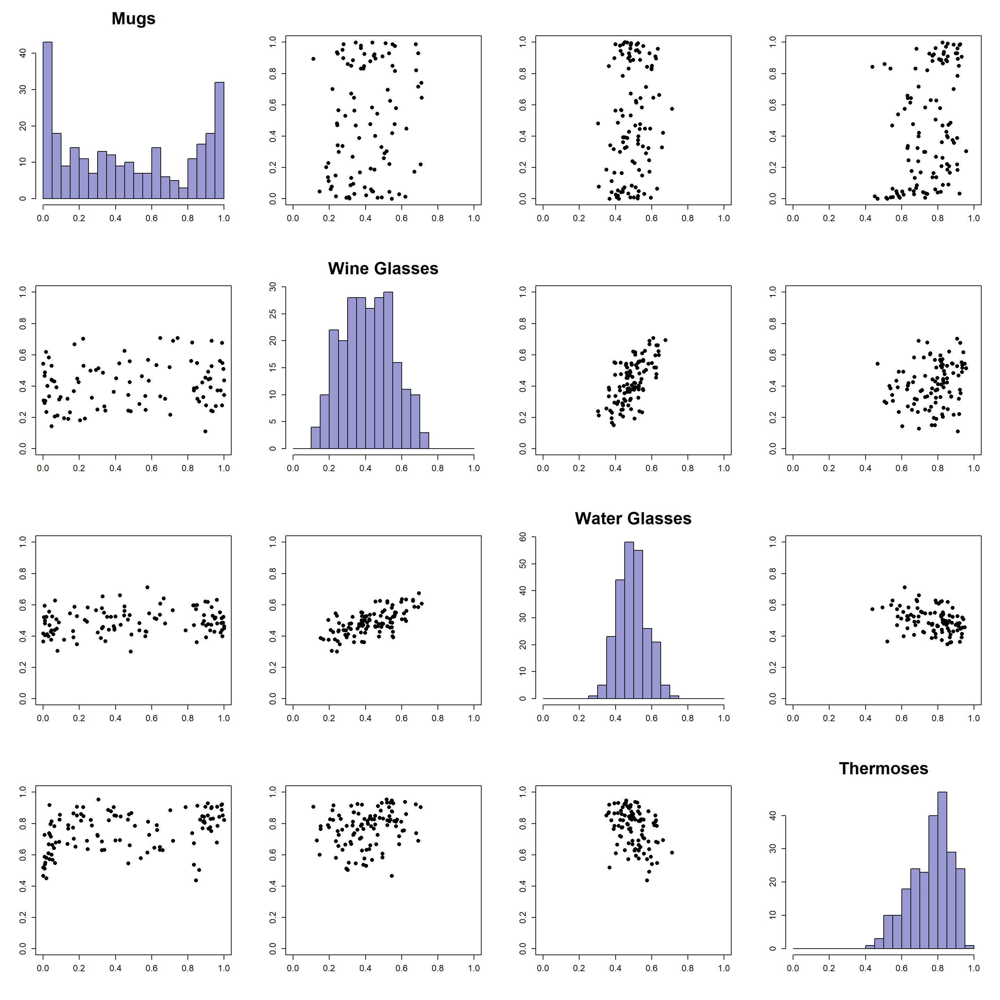

Let’s say you work for a drinkware company, we’ll call it something generic, maybe “Large bi-pEdal sNow cryptId”? Or LENI for short. LENI sells mugs, wine glasses, water glasses, and thermoses. Now, LENI has pretty much cornered the drinkware market, but it does have some stiff competition. Being a good business, you want to understand your share of the market amongst drinkware consumers. You also want to capture the correlation structure between your different products to better understand how an advertising campaign for one product might help boost market share for another.
As with everything, the cost of gathering information is expensive. Since you don’t want to bug your customers too much, you only ask them about a couple of their purchasing behaviors as their walking in. For example, you ask a customer:
“Approximately, how much have you spent on wine glasses in the past year”
They respond, “About $500”
Without showing any judgement, you follow with “And how much did you spend on wine glasses at LENI’s?”
Reluctantly they say “$50”, and make up some story about how Abominable Snowman, your main competitor, is closer to their home. You ask them about their mug purchasing as well and welcome them into the store.
Now, let’s look at some data that we’ve collected from interviewing our customers, but first let’s load in the necessary libraries for our analysis. We’ll also read in some helper functions that we’ve created for this specific analysis. You can find the code here INSERT LINK TO GITHUB for those if you are interested
library(tidyverse)
library(cmdstanr)
library(knitr)
library(kableExtra)
library(ggridges)
utils <- new.env()
source('helper_funcs.R', utils)utils$pair_w_hist(cenc_marg, names=c('Mugs', 'Wine Glasses' ,'Water Glasses', 'Thermoses'), cex.axis=1.2, cex=1.2, cex.main=2.3)
sessionInfo()## R version 4.1.1 (2021-08-10)
## Platform: x86_64-w64-mingw32/x64 (64-bit)
## Running under: Windows 10 x64 (build 19044)
##
## Matrix products: default
##
## locale:
## [1] LC_COLLATE=English_United States.1252
## [2] LC_CTYPE=English_United States.1252
## [3] LC_MONETARY=English_United States.1252
## [4] LC_NUMERIC=C
## [5] LC_TIME=English_United States.1252
##
## attached base packages:
## [1] stats graphics grDevices utils datasets methods base
##
## other attached packages:
## [1] ggridges_0.5.3 kableExtra_1.3.4 knitr_1.36 cmdstanr_0.5.3
## [5] forcats_0.5.1 stringr_1.4.0 dplyr_1.0.9 purrr_0.3.4
## [9] readr_2.1.2 tidyr_1.2.0 tibble_3.1.6 ggplot2_3.3.5
## [13] tidyverse_1.3.1
##
## loaded via a namespace (and not attached):
## [1] Rcpp_1.0.7 svglite_2.1.0 lubridate_1.8.0
## [4] assertthat_0.2.1 digest_0.6.28 utf8_1.2.2
## [7] plyr_1.8.6 R6_2.5.1 cellranger_1.1.0
## [10] backports_1.4.1 reprex_2.0.1 evaluate_0.14
## [13] highr_0.9 httr_1.4.3 pillar_1.6.4
## [16] rlang_1.0.3 readxl_1.4.0 rstudioapi_0.13
## [19] jquerylib_0.1.4 checkmate_2.0.0 rmarkdown_2.11
## [22] webshot_0.5.4 munsell_0.5.0 broom_1.0.0
## [25] compiler_4.1.1 modelr_0.1.8 xfun_0.27
## [28] systemfonts_1.0.4 pkgconfig_2.0.3 htmltools_0.5.2
## [31] tidyselect_1.1.1 tensorA_0.36.2 viridisLite_0.4.0
## [34] fansi_0.5.0 crayon_1.4.2 tzdb_0.3.0
## [37] dbplyr_2.2.1 withr_2.5.0 MASS_7.3-54
## [40] grid_4.1.1 distributional_0.3.1 jsonlite_1.7.2
## [43] gtable_0.3.0 lifecycle_1.0.1 DBI_1.1.3
## [46] magrittr_2.0.1 posterior_1.3.1 scales_1.1.1
## [49] cli_3.3.0 stringi_1.7.5 farver_2.1.0
## [52] fs_1.5.2 xml2_1.3.3 bslib_0.3.1
## [55] ellipsis_0.3.2 generics_0.1.1 vctrs_0.4.1
## [58] tools_4.1.1 glue_1.6.2 hms_1.1.1
## [61] abind_1.4-5 fastmap_1.1.0 yaml_2.2.1
## [64] colorspace_2.0-2 rvest_1.0.2 haven_2.5.0
## [67] sass_0.4.0